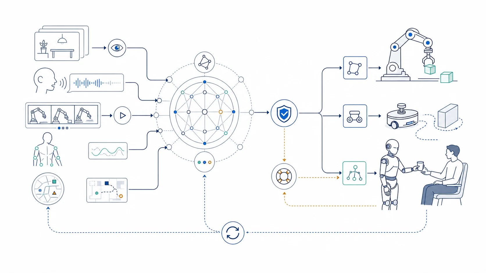

Research Notes
All views expressed here are my own.
Embodied AI / Foundation Models
Thoughts on Embodiment Foundation Models
Embodied foundation models extend foundation-model capabilities from interpreting observations to acting in environments where decisions have physical and temporal consequences.

A foundation model for embodiment should connect perception, prediction, planning, action, and adaptation—not simply attach an action head to a multimodal model.
Embodiment Changes the Learning Problem
An embodied system does not merely describe the world. It changes the world and receives new observations as a consequence. Actions have duration, cost, uncertainty, and sometimes irreversible effects. Embodiment is therefore a useful test of whether abstract knowledge can support situated decision making.
From Multimodal Understanding to Action
Images, language, video, audio, proprioception, and action traces provide complementary views of an environment. The challenge is not only to place these modalities in one model, but to learn representations that remain useful across perception, prediction, planning, and control. High-level instructions must connect to the detailed state transitions required to realize them.
Data Is a Central Bottleneck
Internet-scale text and image data are abundant compared with high-quality interaction data. Physical experience is expensive, platform-specific, and hard to reproduce. Simulation, teleoperation, ego video, synthetic trajectories, and shared robot datasets can help, but each introduces a different gap between recorded behavior and reliable real-world action.
Reliability Must Be Designed In
Embodied models operate where confident mistakes can have physical consequences. They need mechanisms for uncertainty estimation, constraint checking, recovery, and asking for assistance. A capable model is not automatically a trustworthy embodied agent; reliability also depends on memory, controllers, safety layers, and the human interface around it.
Generality May Emerge Through Composition
The practical path may not be a single network controlling everything end to end. A foundation model can provide semantic understanding, world knowledge, and task-level planning while specialized perception and control modules provide precision and safety. The research opportunity lies in how these components communicate, adapt across embodiments, and accumulate experience together.
Directions I Want to Explore
- Which abstractions transfer reliably across robots, tasks, and environments?
- How can models learn from video without observing the actions that produced it?
- What should live inside a foundation model, and what should remain modular?
- How can an embodied agent recognize when to stop or ask for assistance?
- Can physical interaction improve abstract reasoning beyond robotics?